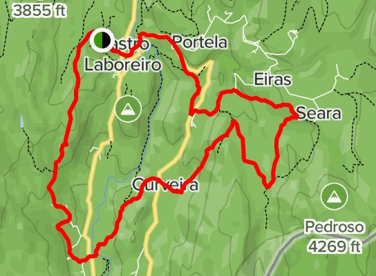
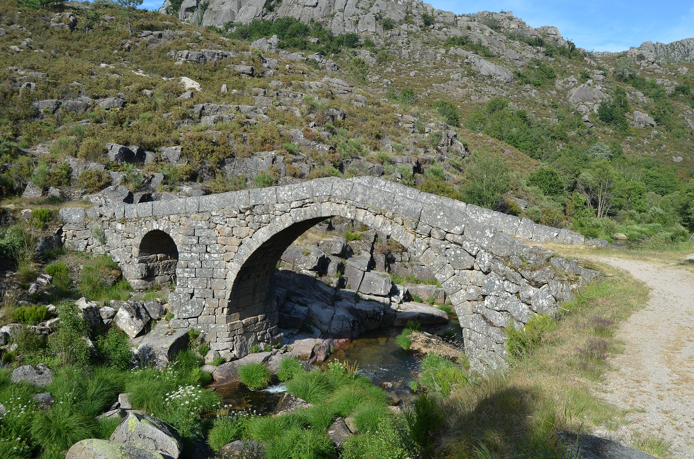
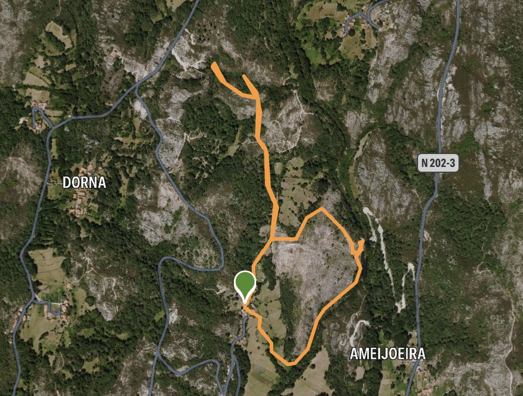
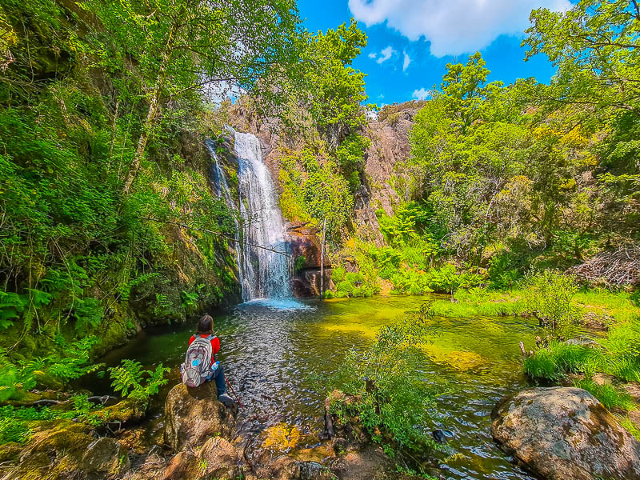
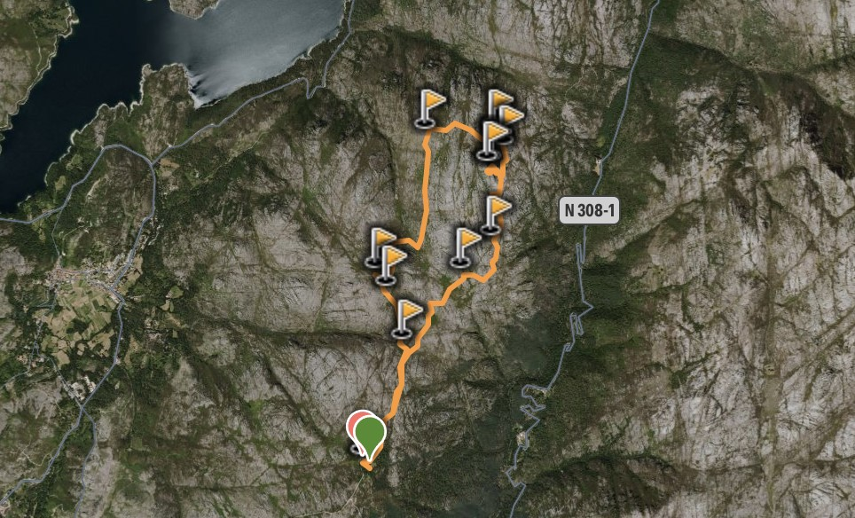
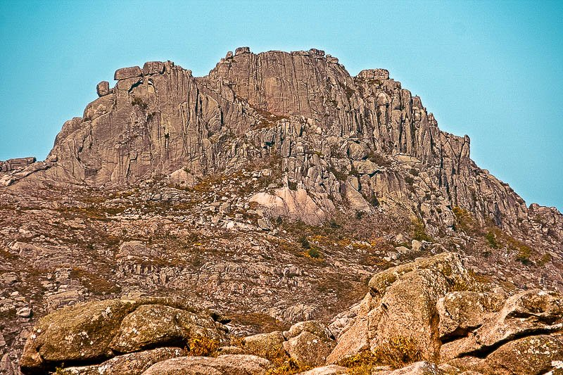

× 
Para quem gosta de fazer umas caminhadas e estar com a natureza ao seu redor, o Gerês tem uma vasta fauna e flora, que podem ser vistos em diversos percursos existentes. Aqui sugerimos três opções diferentes, desde um percurso com 3km até um com 17km.
Distância: 17km Local de Partida/Chegada: Castro Laboreiro
 Distância: 3km Local de Partida/Chegada: Aldeia de Pontes
 Distância: 9km Local de Partida/Chegada: Portela de Leonte/Aldeia do Gerês
 